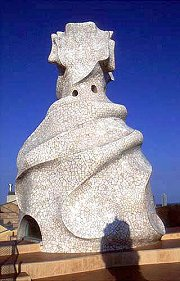

Derain: Matisse

Matisse: Harmonie v èervené

Derain: Westminsterskı most
|
CIVILISMUS, VITALISMUS, UNANIMISMUS
Moderní umìlecké smìry jako civilismus, vitalismus nebo unanimismus ohlašovaly tendence, které se plnì projevily a na zaèátku 20. století v avantgardní tvorbì. Jejich prùkopníci neuznávali pesimismus dekadentù, ale naopak opìvovali civilizaèní a technické vıdobytky i pøírodní a ivotní síly. Z jejich tvorby èiší optimismus, víra v lepší budoucnost a sílu lidské sounáleitosti. Prùkopníkem tìchto postojù byl americkı básník Whitman, a proto bıvá povaován za zakladatele civilismu i vitalismu. Pozdìji tyto smìry rozvíjeli evropští básníci jako Verhaeren, Fort nebo Romains, tvùrce unanimismu. Z èeskıch spisovatelù mìl k vitalismu nejblíe Šrámek a Neumann.
Filozofickou obdobou vitalismu bylo dílo francouzského myslitele Henriho Bergsona (1859-1941). Tento nositel Nobelovy ceny za literaturu pøišel s koncepcí ivotního vzmachu (élan vital). Pøed rozumovım poznáním upøednostòoval intuitivní vhled, kladl velkı dùraz na subjektivní proívání a zabıval se také teorií komièna.
Ve vıtvarném umìní se k vitalismu blíil fauvismus [fovizmus]. Pùvodnì šlo o hanlivé oznaèení nové skupiny francouzskıch malíøù vystavujících na Podzimním salonu (1905-1907), jejich styl kritikùm pøipomínal „divoké šelmy“. Pøedními fauvisty byli Henri Matisse [anri matis], André Derain [deren], Georges Rouault [ruó], Henri Manguin [mangen] nebo Raoul Dufy [raul difi]. Ve stejné dobì se zaèíná rodit abstraktní (nefigurativní) umìní, jeho prùkopníkem byl èeskı malíø František Kupka.

Matisse: Tanec
|
Rouault: Starı král

Dufy: Plakáty v Trouville
Kupka: Amorfa – Dvoubarevná fuga
Co vyjadøuje Kupkùv obraz?
|
Walt Whitman (1819-1892)
Americkı básník Walt Whitman [vólt vitmen] prošel øadou zamìstnání. Pracoval jako poslíèek, sazeè, uèitel, redaktor novin a úøedník ministerstva vnitra. V obèanské válce peèoval o ranìné jako dobrovolnı ošetøovatel. Jeho ivotním dílem je sbírka básní psanıch volnım veršem Stébla trávy. V této knize i v eseji Vyhlídky demokracie se mimo jiné vyznal ze svého obdivu k demokratickému zøízení.
Co víš i Lincolnovi?

Kupka: Lokalizace grafickıch hybnıch sil
|
Walt Whitman: Stébla trávy
Básnická sbírka Stébla trávy vyšla poprvé v roce 1855, Whitman na ní ale pracoval celı ivot a do své knihy pøidával další a další verše. Z 12 básní se tak rozrostla na témìø 400 textù. Whitman je rozdìlil do nìkolika oddílù. Sbírka zaèíná lyrickımi dedikacemi Nápisy, následuje rozsáhlı universalistickı cyklus Zpìv o mnì a oddíly Adamovy dìti, Rákosí, Taní ptáci, Co vyplavilo moøe, U cesty, Rány na buben (téma obèanské války), Památce prezidenta Lincolna, Podzimní potùèky, Šepot nebeské smrti, Od poledne do hvìzdné noci, Písnì rozlouèení, Písek sedmdesátky a Sbohem, má pøedstavivosti. Básník opìvuje práci obyèejnıch lidí, vìdu a materialismus, je fascinován pøírodou a jejími ivly, vyznává se z obdivu k demokracii, kolektivnímu úsilí, Spojenım státùm americkım i zavradìnému prezidentu Lincolnovi. Staví se do role pìvce, ztotoòuje se s rùznımi aspekty ivota a dospívá k universalistické koncepci svìta, kde je vše smysluplnì provázáno.
Stébla trávy nevzbudila valnı ohlas. Ameriètí ètenáøi se o nì zaèali zajímat a po roce 1882, kdy byla sbírka zakázána. Kritikové autora obviòovali z nemravnosti, homosexuality a neumìleckosti.
Walt Whitman: Vyhlídky demokracie
V eseji Vyhlídky demokracie pøedkládá Whitman vlastní vizi ideální demokratické budoucnosti a srovnává ji s americkou realitou.
|
Civilismus
Civilisté opìvovali moderní civilizaci a její vıdobytky – vynálezy, objevy, stroje, továrny atd. K nejvıznamnìjším pøedstavitelùm tohoto smìru patøí Whitman a Verhaeren, v Èechách potom S.K.Neumann (Nové zpìvy).
Vitalismus
Vitalisté oslavovali ivotní (lat. vitalis) energii, pøírodu a aktivní pøístup k ivotu. K pøedním vitalistùm patøí Whitman a Verhaeren, v Èechách potom Neumann (Kniha lesù, vod a strání, A ije ivot!) a Šrámek.
Jak se liší volnı verš od vázaného?
V èem se liší volnı verš od prózy?
Napiš vlastní báseò volnım veršem. Zpracuj stejné téma veršem vázanım i prózou.
Jak na tebe pùsobí Whitmanovy básnì? Co se ti na nich líbí a nelíbí? Rozumíš jim?
Co si myslíš o Whitmanovì vıroku „Zemì je básní a eny a mui nepsanımi verši“?
Co si Whitman myslí o demokracii a jejích vyhlídkách?
Jakı je tvùj názor na demokratické státní zøízení?
Je Èeská republika demokratickou zemí? Podle èeho tak usuzuješ?
Srovnej ivot lidí v demokratickıch a totalitních státech.
|
Émile Verhaeren (1855-1916)
Vlámskı spisovatel Émile Verhaeren [emil veraren] il v Belgii a psal francouzsky. Zprvu skládal básnì v duchu parnasismu a symbolismu, ale víra v moderní civilizaci, pokrok a ivot z nìj uèinila èelného pøedstavitele civilismu a vitalismu. Kromì básnickıch sbírek Pøeludné krajiny, Pøízraèné vesnice, Chapadlovitá mìsta, Bouølivé síly, Znásobená záøe, Svrchované rytmy nebo Vysoké plameny napsal kolektivní drama Svítání.
|
Verhaerenova poezie
Verhaeren sloil ve svıch básních hold vıdobytkùm technické civilizace (Továrny) a ivotodárnım silám pøírody (Strom). Na rozdíl od symbolistù a dekadentù vzhlíí k budoucnosti s nadìjí a opìvuje aktivní pøístup k ivotu (hnoucí ivot).
|

Gogh: Morušovník
Co tì nejvíce zaujalo na ukázkách?
Porovnej básnì Továrny a Strom.
Najdi v ukázkách rysy civilismu, vitalismu a dalších moderních umìleckıch smìrù.
Srovnej Verhaerenovu tvorbu s Whitmanovou.
|
Paul Fort (1872-1960)
Francouzskı básník Paul Fort [pol fór] zaloil divadlo Le Théâtre d’Art, kde se uvádìly symbolistické hry. Je autorem monumentálního cyklu Francouzské balady.
Povauješ Fortovy texty za básnì nebo prózy?
V èem mají blíe k poezii a v èem k próze?
|
Paul Fort: Francouzské balady
Francouzské balady tvoøí rozsáhlı cyklus, na kterém Fort pracoval pøes 50 let. Celkem èítá 54 svazkù a spisovatel do nìj zaøadil vìtšinu básnickıch sbírek, které za svùj ivot napsal.
|

Manguin: 14. èervenec v Saint-Tropez
|
Stanislav Kostka Neumann
(1875-1947)

Neumann pocházel z Prahy, kde také zemøel. Prošel bouølivım umìleckım i názorovım vıvojem od dekadence a symbolismu pøes anarchismus a k proletáøské poezii. Vrcholem jeho tvùrèích sil bylo období vitalismu (naturismu) – básnická sbírka Kniha lesù, vod a strání a civilismu – kniha A ije ivot! a básnická sbírka Nové zpìvy.
Kupka: Newtonovy kotouèe
|
S.K.Neumann: Kniha lesù, vod a strání
Básnickou sbírkou Kniha lesù, vod a strání (1914) sloil Neumann hold pøírodì a jejím krásám. Tato sbírka pøírodní lyriky je povaována za vrchol jeho tvorby. Mùeme v ní najít rysy vitalismu i naturismu.
S.K.Neumann: A ije ivot!
Sta A ije ivot! z roku 1913 mùeme oznaèit za èeskı manifest vitalismu. Dala název pozdìjší Neumannovì knize.
S.K.Neumann: Nové zpìvy
Básnická sbírka Nové zpìvy vznikla pøed 1. svìtovou válkou, ale vyjít mohla a na jejím konci (1918). Ústøedním tématem této knihy je oslava moderní civilizace a techniky. Ve vstupním cyklu Zpìvy drátù Neumann velebí technické vıdobytky, které propojují a sjednocují svìt. Následují oddíly Zpìvy svìtel a Zpìvy z ticha (Skøivan). Pozdìji k nim ještì pøibyly Zpìvy z lomozu (Chvála rotaèky, Stavba vodovodu) a Zpìvy pováleèné.
|
Naturismus
Naturismus byl ménì známı smìr, kterı propagoval pøírodu a pøirozenost (lat. natura). Kromì Neumanna se k nìmu hlásil napø. Francouz André Gide.
Jak se ti líbí Neumannovy básnì?
Najdi v ukázkách rysy jednotlivıch moderních umìleckıch smìrù.

Kupka: Poèátek ivota
Zrekapituluj Neumannovy názory na umìní popsané v manifestu A ije ivot!
Souhlasíš s jejich autorem? Proè?

Beneš Knüpfer: Fauni prchající pøed automobilem
Srovnej ukázky z Neumannova cyklu Zpìvy drátù s „ideální“ básní citovanou ve verneovce Paøí ve 20. století.
|
Fráòa Šrámek (1877-1952)

Šrámek se narodil v Sobotce a zemøel v Praze. Gymnaziální léta strávil v Písku. Pøátelil se s Neumannem a hlásil se k anarchistickému hnutí. Jeho básnická sbírka Splav, romány Støíbrnı vítr a Tìlo nebo divadelní hry Léto a Mìsíc nad øekou mají velmi blízko k vitalismu a impresionismu.
Kupka: Voda (Koupající se)
|
Fráòa Šrámek: Støíbrnı vítr
Senzualistickı román Støíbrnı vítr líèí dospívání Jana Ratkina. Jeník si pøíliš nerozumí s otcem a citovì se upíná k matce. S obdivem vzhlíel ke svému strıci, jeho sebevrada Jeníkem otøásla. Naivní a citovì zaloenı Ratkin postupnì poznává skuteènı ivot. Z venkova odjídí do mìsta studovat gymnázium. Odmítá pochybnou morálku dospìlıch, zvláštì matky svého spoluáka Huga, která podvádí manela. Spøátelí se se studentem Zachem, se kterım navštíví veøejnı dùm. Zamiluje se do Anièky „posedlé“, ale ta o nìj nestojí.
Fráòa Šrámek: Splav
Rozsáhlá básnická sbírka Splav (1916) je velmi rùznorodá. Obsahuje skladby lyrické i lyrickoepické. Velmi vıraznı je motiv tìsného sepìtí s pøírodou, kterı dává Šrámkovım veršùm naturistickı ráz, a s rodnım krajem.
|

Kupka: Tryskání
Líbila se ti ukázka ze Šrámkova Støíbrného vìtru? Proè?
Jak èlovìk pozná, e u je dospìlı?
V èem se liší dospívání od dospìlosti?
Srovnej studentskı ivot s ivotem dospìlıch.
Co si myslíš o vıroku „nevìø nikomu, komu je pøes tøicet“?
Jak na tebe pùsobí Šrámkova poezie?
Vyber si jakoukoliv Šrámkovu báseò, nauè se ji zpamìti a zarecituj ji svım spoluákùm.
Vysvìtli, proè sis vybral/a právì tuto báseò.
|
Jules Romains (1885-1972)
Francouz Louis Farigoule [lui farigul] psal pod pseudonymem Jules Romains [il romen] a proslul jako zakladatel unanimismu. Pøátelil se s autory sdruenımi ve skupinì Opatství, kteøí vydali Romainsovu básnickou sbírku Unanimní ivot a nadšenì se pøihlásili k novému smìru. Romainsovım vrcholnım dílem je 27 svazkovı román Lidé dobré vùle. Do èeštiny byla pøeloena satirická divadelní hra Knock neboli Triumf vìdy nebo prózy Obrozené mìsteèko, Kdosi umøel a Kumpáni.
Pokus se zjistit nìco o skupinì Opatství.
|
Jules Romains: Kumpáni
Humoristickı román Kumpáni vypráví o skupinì pøátel, kteøí v noci pøepadnou místní kasárny a vydávají se za ministerskou inspekci. Vyhlásí poplach, èím celé mìsto Ambert uvedou ve zmatek. Jeden z povedenıch kumpánù se pøevleèe za knìze a ujme se ranního kázání. Jeho poselstvím je „Milujte se a mnote se!“... Poslední taškáø se vydává za sochu. Pøi slavnostním odhalení „oije“ a zaène nadávat zmatenım divákùm.
|
Unanimismus
Název unanimismus je sloeninou latinskıch slov unus (jeden) a animus (duch). Jeho tvùrce Jules Romains popsal novı smìr v manifestu Duše lidí (1904) a své myšlenky dále rozvedl v Pøíruèce deifikace. Unanimisté se odvraceli od materialismu. Jejich ideálem byly nadosobní hodnoty, pocit sounáleitosti a kolektivismus. Vyznávali sepìtí èlovìka s pøírodou i vìcmi a tzv. kolektivní duši.
Najdeš v Romainsovì básni Jednou rysy unanimismu?
Jaké je poselství této básnì?
Souhlasíš s Romainsovımi názory?
|
Internetové stránky
Whitman
Whitman
Whitman
Whitman
Verhaeren
Romains
Exkurze
Kupka, Muzeum Kampa, Praha
Kupka: Klávesy piana (Jezero)
|
Doporuèená èetba
Bergson, Henri: Myšlení a pohyb, pøel. J.Èapek, Mladá fronta, Praha 2003
Bergson, H.: Smích, Naše vojsko, Praha 1993
Fort, Paul: Francouzské balady, pøel. J.Konùpek, SNKLHU, Praha 1960
František Kupka prùkopník abstrakce a malíø kosmu, Verlag Gerd Hatje, 1997 (katalog k vıstavì)
Lamaè, Miroslav: František Kupka, Odeon, Praha 1984
Neumann, Stanislav Kostka: Básnì 3, SNKLU, Praha (Nové zpìvy)
Neumann, S.K.: Kniha lesù, vod a strání, Odeon, Praha 1972
Neumann, S.K.: Konfese a konfrontace (2 svazky), Èeskoslovenskı spisovatel, Praha 1988
Romains, Jules: Kumpáni, pøel. V.Brett, Odeon, Praha 1972
Romains, J.: Lidé dobré vùle, Praha 1937
Spurnı, Jan: Fauvismus, Nakladatelství èeskoslovenskıch vıtvarnıch umìlcù, Praha 1966
Šrámek, Fráòa: Modrı a rudı, Støíbrnı vítr, Léto, Splav, NLN, Praha 2000
Vanèura, Zdenìk: Walt Whitman, básník demokracie, Praha 1955
Verhaeren, Emile: Básnì, pøel. Konùpek, Zábrana, SNKLU, Praha 1962
Whitman, Walt: Stébla trávy, pøel. Koláø, Urbánek, Odeon, Praha 1969
Whitman, W.: Stébla trávy, pøel. Koláø, Urbánek, Cylindr, Praha 1998 (vıbor)
Whitman, W.: Zpívám o sobì, pøel. I.Skála, Èeskoslovenskı spisovatel, Praha 1983
|
Vypracuj písemnı referát o nìkteré z uvedenıch knih.

Komín obytného domu Casa Milá od Antonia Gaudího
|
|